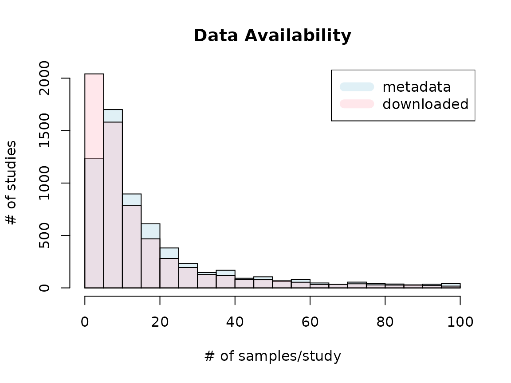

vignettes/training_datasets/available_samples.Rmd
available_samples.RmdWe used human RNA sequencing datasets from RNA-seq Sample Compendia in refine.bio, which hosts uniformly processed gene expression data from EBI’s ArrayExpress, NCBI’s GEO and SRA. Data were downloaded on April 10th, 2020, and we selected studies based on the following criteria: 1) Exclude studies with more than 1,000 samples because they are more likely to be single-cell RNA sequencing datasets. 2) Exclude studies assigned with a Medical Subject Headings (MeSH) term, “Single-Cell Analysis”. 3) Exclude studies with less than or equal to 50 successfully downloaded and imported samples. After filtering, the complete compendium includes 536 studies (defined as a single SRA study) comprising 44,890 samples.
The detail of training data is summarized in studyMeta.tsv table in GenomicSuperSignature package. This vignette explains how this summary table is built.
extdata <- system.file("extdata", package = "GenomicSuperSignature")
studyMeta <- read.table(file.path(extdata, "studyMeta.tsv.gz"))
head(studyMeta)
## studyName downloaded metadata imported RAVmodel_677 RAVmodel_1399
## 2 DRP000425 4 4 FALSE FALSE FALSE
## 3 DRP000464 8 8 FALSE FALSE FALSE
## 4 DRP000499 21 21 TRUE FALSE TRUE
## 5 DRP000527 2 4 FALSE FALSE FALSE
## 6 DRP000665 7 7 FALSE FALSE FALSE
## 7 DRP000929 4 4 FALSE FALSE FALSE
## RAVmodel_536
## 2 FALSE
## 3 FALSE
## 4 FALSE
## 5 FALSE
## 6 FALSE
## 7 FALSE
## title
## 2 Homo sapiens T24 human bladder cancer cell line Transcriptome
## 3 pre-miRNA profiles obtained through application of locked nucleic acids reveals complex 5’/3’ arm variation including concomitant cleavage and polyuridylation patterns
## 4 Homo sapiens strain:Human ICESeq Genome sequencing
## 5 RNA sequencing of wild-type or mutant U2AF35 transduced HeLa Cells
## 6 Global transcriptional response against glucose deprivation
## 7 Human inactive X chromosome is compacted through a polycomb-independent SMCHD1-HBiX1 pathway [RNA-seq]aggregated_metadata.json is downloaded along with the training dataset. We collect the number of samples per study based on this metadata.
data.dir <- system.file("extdata", package = "GenomicSuperSignaturePaper")
meta_json <- jsonlite::fromJSON(file.path(data.dir,
"aggregated_metadata.json"))
experiments <- meta_json[[2]]
studies <- list()
for (i in seq_along(experiments)) {
studies <- append(studies, list(experiments[[i]]$sample_accession_codes))
names(studies)[i] <- names(experiments)[i]
}
sampleNum <- sapply(studies, function(x) length(x))I summarized the number of samples based on aggregated_metadata.json under metadata column and the number of actually downloaded _quant.sf sample files under downloaded column in the studyMeta table.
# download.dir <- "path/to/download/directory"
dirNames <- list.files(download.dir)
ind_rm <- which(dirNames %in%
c("aggregated_metadata.json", "README.md", "LICENSE.TXT"))
if (length(ind_rm) != 0) {dirNames <- dirNames[-ind_rm]}
length(dirNames) # 6457 studies were downloaded
studyMeta <- as.data.frame(matrix(NA, nrow = length(dirNames), ncol = 3))
colnames(studyMeta) <- c("studyName", "downloaded", "metadata")
studyMeta$studyName <- dirNames
for (i in seq_along(dirNames)) {
dir_path <- file.path(download.dir, dirNames[i])
## actually downloaded samples
ind1 <- which(studyMeta$studyName == dirNames[i])
studyMeta$downloaded[ind1] <- grep("_quant.sf",
list.files(dir_path)) %>% length
## available samples based on metadata
ind2 <- which(names(sampleNum) == dirNames[i])
studyMeta$metadata[ind2] <- sampleNum[ind2]
}1399 studies with more than 20 samples were successfully imported by tximport::tximport
studyNames <- studyMeta$studyName
importedFiles <- c()
# download.dir2 <- "path/to/imported/directory"
for (i in seq_along(studyNames)) {
out.path <- file.path(download.dir2, studyNames[i])
fname <- file.path(out.path, paste0(studyNames[i], ".rds"))
if (file.exists(fname)) {
importedFiles <- c(importedFiles, studyNames[i])
}
}
imported_ind <- which(studyMeta$studyName %in% importedFiles)
studyMeta$imported <- FALSE
studyMeta$imported[imported_ind] <- TRUE Study title is also added.
for (i in seq_along(experiments)) {
title <- experiments[[i]]$title
studyMeta$title[i] <- title
}Metadata bar (light blue) shows the number of studies with the given ranges of study sizes based on the metadata. Downloaded bar (pink) represents the number of studies with the given ranges of study sizes that were successfully downloaded and imported through tximport. Based on metadata, there were studies with more than 100 samples, but at the time of snapshot, only up to 100 samples were available. Thus, the plot displays only up to 100 samples/study cases. Due to the unavailability of certain samples, more studies belong to 0-5 samples/study bracket than metadata suggests.

## Cases where all the available samples (based on metadata) were downloaded
sum(studyMeta$downloaded == studyMeta$metadata)
## [1] 3135
## The number of studies with more than 100 samples:
## Actually downloaded vs. expected by metadata
sum(studyMeta$downloaded > 100)
## [1] 0
sum(studyMeta$metadata > 100)
## [1] 426Example study, SRP152576:
- 13,127 samples are available based on aggregated_metadata.json.
- No sample is available based on refine.bio webpage.
- 100 samples are actually downloaded.
- 3,927 samples are available based on metadata_SRP152576.csv.
ind <- which.max(studyMeta$metadata)
studyMeta[ind,]
## studyName downloaded metadata imported RAVmodel_677 RAVmodel_1399
## 5531 SRP152576 100 13127 TRUE FALSE TRUE
## RAVmodel_536
## 5531 FALSE
## title
## 5531 In vivo molecular signatures of severe dengue infection revealed by viscRNA-Seq
file_dir <- file.path(download.dir, studyMeta$studyName[ind])
fname <- paste0("metadata_", studyMeta$studyName[ind], ".tsv")
sampleMeta <- read.table(file.path(file_dir, fname), header = TRUE, sep = "\t")
dim(sampleMeta)
## [1] 3927 19
head(sampleMeta, 3)
## refinebio_accession_code experiment_accession refinebio_age
## 1 SRR7481117 SRP152576 14
## 2 SRR7480712 SRP152576 14
## 3 SRR7483223 SRP152576 31
## refinebio_cell_line refinebio_compound refinebio_disease
## 1 NA NA NA
## 2 NA NA NA
## 3 NA NA NA
## refinebio_disease_stage refinebio_genetic_information refinebio_organism
## 1 NA NA HOMO_SAPIENS
## 2 NA NA HOMO_SAPIENS
## 3 NA NA HOMO_SAPIENS
## refinebio_platform refinebio_race refinebio_sex
## 1 NextSeq 500 (NextSeq500) NA male
## 2 NextSeq 500 (NextSeq500) NA male
## 3 NextSeq 500 (NextSeq500) NA female
## refinebio_source_archive_url refinebio_source_database
## 1 NA SRA
## 2 NA SRA
## 3 NA SRA
## refinebio_specimen_part refinebio_subject refinebio_time refinebio_title
## 1 blood blood (pbmcs) NA 1001701103_E10
## 2 blood blood (pbmcs) NA 1001701101_C19
## 3 blood blood (pbmcs) NA 1001701401_P23
## refinebio_treatment
## 1 NA
## 2 NA
## 3 NAstudies_with_error.csv file contains the sample names that were failed to be downloaded/imported when I tried to use studies > 50 samples based on the metadata. You can find more documentation on this under Methods/model_building.
## Training data used for GenomicSuperSignature
res_all <- readRDS("accessions.rds")
## Training data used for multiPLIER
recount2 <- read.table("https://raw.githubusercontent.com/greenelab/multi-plier/master/data/sample_info/recount2_srr_srs_srp.tsv", header = TRUE)
head(res_all, 3)
## run_accession source study_accession sample_accession experiment_accession
## 1 DRR006374 SRA DRP000987 DRS005720 DRX005592
## 2 DRR006375 SRA DRP000987 DRS005721 DRX005593
## 3 DRR006376 SRA DRP000987 DRS005722 DRX005594
head(recount2, 3)
## run study sample
## 1 SRR013549 SRP000599 SRS002125
## 2 SRR013550 SRP000599 SRS002126
## 3 SRR013551 SRP000599 SRS002127